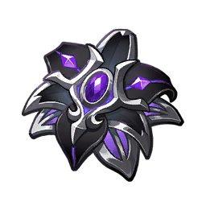

SANDS
Elemental Mastery
GOBLET
Elemental Mastery (No Dendro%)
CIRCLET
CRIT DMG / Rate / EM
Nefer enters the meta as the definitive on-field driver for Lunar-Bloom teams. Her kit uniquely absorbs field Dendro Cores, converting them into Seeds of Deceit under the Ascendant Gleam Moonsign to fuel her high-damage Phantasm Performance Charged Attacks. Because Lunar-Bloom can critically strike, her output rivals top-tier hypercarries when paired with her core support, Lauma.
Elemental Skill (Senet Strategy) takes top priority as it governs the Shadow Dance state and Phantasm Performance motion values. Burst follows for frontloaded AoE damage, while basic Normal Attacks can be left uninvested.
| Stat Metric | Target Threshold | Justification |
|---|---|---|
| Elemental Mastery | 500+ | Essential scaling core; directly converts into Lunar-Bloom Base DMG and passive dew generation. |
| CRIT Rate | 40% ~ 50% | Base rate prior to the +30% CRIT Rate buff from 4pc Night of the Sky's Unveiling. |
| CRIT DMG | 220%+ | Lunar-Bloom inherits CRIT multipliers, making high CRIT DMG non-negotiable for damage ceilings. |
| Energy Recharge | 100% ~ 130% | Optional substat; Burst is supplementary and can be cast every other rotation. |
| ATK | Baseline | Secondary value; Lunar-Bloom scaling prioritizes EM and CRIT formulas. |


Substat Priority: CRIT Rate > CRIT DMG > Elemental Mastery > Energy Recharge
 Nahida
Nahida
 Columbina
Hydro Enabler
Columbina
Hydro Enabler
Lauma is the non-negotiable partner providing Moonsign multipliers and CRIT scaling. Columbina (on Prototype Amber) supplies Hydro application and team sustain.
 Sucrose
EM Share / Grouping
Sucrose
EM Share / Grouping
Aino and Sucrose serve as strong budget alternatives, with Sucrose providing massive EM sharing while Lauma remains the essential reaction anchor.
Sucrose
Accessible F2P setups utilizing Dendro Traveler / Kirara alongside Aino to activate Seeds of Deceit via Ascendant Gleam.
| Tier | Name | Rating | Combat Mechanics & Pull Value |
|---|---|---|---|
| C1 | Planning Breeds Success | ★★★ (HIGH VALUE) | Increases Phantasm Performance Lunar-Bloom Base DMG by 60% of EM (further boosted by Veil of Falsehood), lowering artifact stat thresholds significantly. |
| C2 | Observation Feeds Strategy | ★★☆ | Extends Veil of Falsehood duration by +5s, increases stack limit to 5, buffs Phantasm Performance up to 140%, and grants +200 EM at max stacks. |
| C3 | Deceit Cloaks the Truth | ★★☆☆ | Increases Elemental Skill (Senet Strategy: Dance of a Thousand Nights) Level by 3. |
| C4 | Delusion Ensnares Reason | ★★☆ | Gains Verdant Dew 25% faster during Shadow Dance and shreds nearby opponents' Dendro RES by 20%. |
| C5 | Opportunity Hides in the Margins | ★★☆☆ | Increases Elemental Burst (Sacred Vow: True Eye's Phantasm) Level by 3. |
| C6 | Victory Flows from the Turning of Tides | ★★★★★ (WHALE) | Converts the 2nd stage of Phantasm Performance to deal AoE Dendro DMG equal to 85% EM, plus an additional finishing AoE burst equal to 120% EM (both counted as Lunar-Bloom DMG). |
Nefer delivers extraordinary transformative reaction DPS in Version Luna VI. While her performance is tightly coupled with Lauma, her ability to critically strike with Lunar-Bloom and absorb field cores without taking self-damage makes her the premier Dendro carry of the Nod-Krai era.